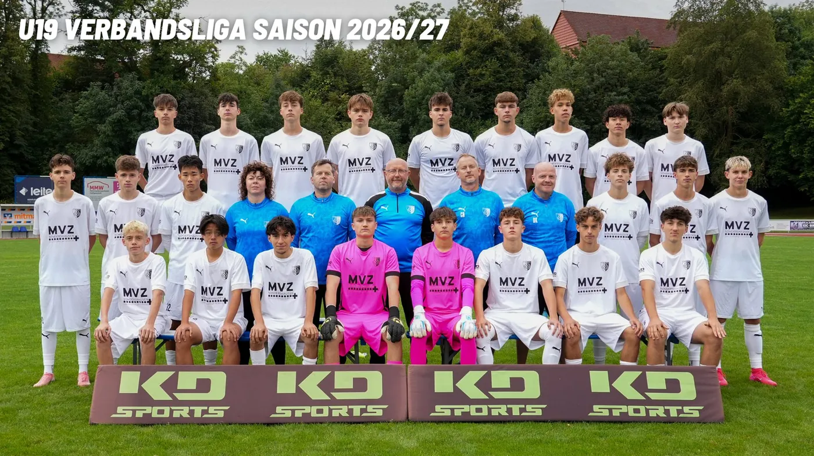

SC Heiligenstadt U19 – Der Kader 2026/27

Tabelle
Inhalt von FuPa Hier zeigen wir die Tabelle von FuPa. Beim Laden überträgt dein Browser Daten wie die IP-Adresse an die FuPa GmbH. Datenschutz bei FuPa
Spielplan
Inhalt von FuPa Hier zeigen wir den Spielplan von FuPa. Beim Laden überträgt dein Browser Daten wie die IP-Adresse an die FuPa GmbH. Datenschutz bei FuPa
Nächste Spiele
- 18:30Do, 22.10.Landesfreundschaftsspiele1. SC 1911 Heiligenstadt:1. SC Göttingen 05 U19HeimspielZum Spiel 1. SC 1911 Heiligenstadt gegen 1. SC Göttingen 05 U19
- 10:30So, 01.11.Verbandsliga1. SC 1911 Heiligenstadt:SV 09 ArnstadtHeimspielZum Spiel 1. SC 1911 Heiligenstadt gegen SV 09 Arnstadt
- 10:30So, 08.11.Verbandsliga1. SC 1911 Heiligenstadt:JFV Eichsfeld MitteHeimspielZum Spiel 1. SC 1911 Heiligenstadt gegen JFV Eichsfeld Mitte
- 10:30Sa, 14.11.VerbandsligaFSV Waltershausen:1. SC 1911 HeiligenstadtAuswärtsZum Spiel FSV Waltershausen gegen 1. SC 1911 Heiligenstadt
- 10:30Sa, 21.11.VerbandsligaFSV Eintracht Eisenach:1. SC 1911 HeiligenstadtAuswärtsZum Spiel FSV Eintracht Eisenach gegen 1. SC 1911 Heiligenstadt
- 10:30So, 14.03.Verbandsliga1. SC 1911 Heiligenstadt:1. FC EichsfeldHeimspielZum Spiel 1. SC 1911 Heiligenstadt gegen 1. FC Eichsfeld
- 10:30So, 11.04.VerbandsligaBSV Eintracht Sondershausen:1. SC 1911 HeiligenstadtAuswärtsZum Spiel BSV Eintracht Sondershausen gegen 1. SC 1911 Heiligenstadt
- 10:30So, 18.04.Verbandsliga1. SC 1911 Heiligenstadt:SG FSV SömmerdaHeimspielZum Spiel 1. SC 1911 Heiligenstadt gegen SG FSV Sömmerda
Tabelle und Kader auf fussball.deAlle Termine
Quelle: www.sc1911-heiligenstadt.de · Stand 06.10.2026